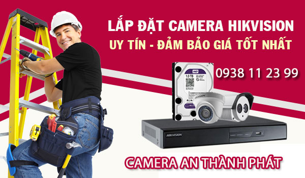

LIÊN KẾT LẮP CAMERA QUAN SÁT QUẬN 12 GIÁ RẺ UY TÍN.
LẮP CAMERA QUẬN 1 GIÁ RẺ 
Lắp camera quan sát quận 1 công ty An Thành Phát thường lắp đặt camera cho cửa hàng, văn phòng và nhà phố . sử dụng những camera quan sát thương hiệu tốt hoặt động ổn định, Hình ảnh chất lượng FULL HD 1080P có thệ giám sát từ xa hình ảnh HD công nghệ mới.
LẮP ĐẶT CAMERA QUẬN 2 
Lắp đặt camera quan sát tại quận 2 thường lắp những dự án căn hộ cao cấp sử dụng camera wifi có chất lượng tốt kết nối giám sát từ xa ổn định, đặt biệt những dự án lắp camera cho những khu biệt thự hình ảnh chất lượng tốt công nghệ FULL HD 1080P.
LẮP CAMERA QUAN SÁT QUÂN 3 
Lắp camera quan sát quận 3 giá rẻ sử dụng camera chính hãng lắp đặt cho những dự án như: shop thời trang, cửa hàng, nhà phố , với những dự án camera quan sát quận 3 chọn camera giá rẻ tiết kiệm phù hợp cho những điều kiện kinh doanh không ổn định cho cửa hàng.
LẮP CAMERA QUẬN 4 UY TÍN 
Công ty lắp camera quan sát tại quận 4 giá rẻ camera giám sát từ xa công nghệ mới sửa chửa lắp đặt camera quan sát giá rẻ tại quận 4 công nghệ mới chuyên lắp camera quan sát quận 4 chuyên lắp cho văn phòng giá rẻ chất lượng tốt, chuyên thi công camera văn phòng giá rẻ chất lượng.
LẮP CAMERA QUẬN 5 GIÁ RẺ 
lắp camera quan sát quận 5 giá rẻ tiết kiệm chi phí chọn công ty An Thành Phát là một trong những công ty camera uy tín sử dụng camera chính hãng giám sát từ xa ổn định, Thường lắp camera quan sát cho cửa hàng nhà phố công nghệ mới giám sát từ xa ổn định tiết kiệm.
LẮP ĐẶT CAMERA QUẬN 6 
Dịch vụ lắp đặt camera quan sát tại quận 6 giá rẻ sử dụng camera chính hãng chất lượng tốt, sử dụng camera quan sát chính hãng công nghệ HD giám sát qua điện thoại từ xa, Camera quan sát tại quận 6 An Thành Phát là một trong những công ty uy tín chuyên lắp caemra cho cửa hàng.
LẮP CAMERA QUAN SÁT QUẬN 7 
Lắp đặt camera quan sát quận 7 thường phục vụ cho những công trình camera quan sát cho căn hộ cao cấp, cửa hàng buôn bán, văn phòng đại diện và những trường học cao cấp giám sát quản lý từ xa, với nhiều năm kinh nghiệm lắp đặt camera quan sát An Thành Phát luôn phụ vụ tốt những công trình chuyên dụng.
CÔNG TY CAMERA QUẬN 8 
Lắp camera quan sát an ninh quận 8 đến thời điểm hiện tại An Thành Phát đã triển khai rất nhiều hệ thống camera giám sát nhà phố, camera giám sát sát khu phố với chất lượng hình ảnh sáng đẹp, thương hiệu camera tốt hàng đầu thế giới, An Thành Phát là công ty camera uy tín hàng đầu lắp đặt camera quan sát chính hãng giá rẻ
CAMERA QUẬN 9 GIÁ RẺ 
Lắp camera quan sát gia đình văn phòng tại quận 9 nên chọn công ty camera An Thành Phát là lựa chọn tốt camera quan sát công nghệ mới giá rẻ camera quan sát hình ảnh HD giám sát từ xa qua mạng điện thoại tại quận 9 chất lượng tốt giá rẻ .
LẮP CAMERA QUẬN 10 
Lắp đặt đặt camera quan sát giá rẻ tại quận 10 dịch vụ lắp camera quan sát cho cửa hàng giá rẻ uy tín sử dụng camera chính hãng chất lượng FULL HD phù hợp lắp camera quan sát cho cửa hàng khu vực quận 10 tiết kiệm chi phí giám sát từ xa ổn định.
LẮP ĐẶT CAMERA QUẬN 12 
Thi công lắp đặt camera quan sát tại quận 12 giá rẻ camera quận 12 công ty An Thành Phát thường thi công cho nhà xưởng, kho hàng và nhà vườn sử dụng camera có hồng ngoại giám sát tố, hổ trợ giám sát thiếu ánh sáng vẫn thấy màu đây là lựa chọn camera chất lượng.
LẮP CAMERA QUẬN 11 GIÁ RẺ 
Lắp dặt sử chửa bảo hành camera quan sát tại quận 11 uy tín giá rẻ camera giám sát qua mạng điện thoại từ xa ổn định, Công ty camera An Thành Phát chuyên thi công lắp đặt camera quan sát gia đình cửa hàng văn phòng và căn hộ tại khu vực quận 11 giá rẻ tiết kiệm chi phí giám sát ổn định.
LẮP CAMERA BÌNH THẠNH 
Dịch vụ tư vấn lắp đặt camera quan sát uy tín khu vực quận Bình Thạnh giá rẻ sử dụng camera quan sát thương hiệu tốt kbvision, Dahua, hikvision giám sát qua mạng điện thoại từ xa ổn định kỹ thuật lắp đặt tận nơi bảo trì bảo hành 24 tháng.Giải pháp tiết kiệm chi phí giám sát từ xa ổn định là tiêu chí hàng đầu
LẮP CAMERA BÌNH TÂN GIÁ RẺ 
Với nhiều năm kinh nghiệm lắp camera quan sát cho nhà xưởng kho hàng trong khu vực quận bình tân, bộ phân kỹ thuật tư vấn giải pháp với nhiều năm kinh nghiệm luôn mang đến cho khách hàng những giải pháp tiết kiệm chi phí hoặt động ổn định giá rẻ sử dụng camera chính hãng.
LẮP CAMERA TÂN BÌNH 
Khu công nghiệp Tân Bình, khu dân cư cao cấp gân sân bay, chợ tân bình là những dự án lắp đặt camera quan sát quan trọng của An Thành Phát với tiêu chí giá rẻ và mang lại hiệu quả cao gân trụ sở công ty là một trong những lợi thế để bảo trì và dịch vụ sau bán hàng tốt nhất.
CAMERA QUAN SÁT TẠI HÓC MÔN 
Quận Hóc môn là một trong những quận huyên tốc độ phát triển cao lắp đặt camera quan sát tại Quận Hóc Môn cũng có nhiều lựa chọn trong đó An Thành Phát là một trong những công ty camera hàng đầu chuyên thi công lắp đặt camera chính hãng giám sát từ xa hổ trợ khách hàng tốt nhất tại Hóc môn củ chi, Công ty lắp camera tại hóc môn giá rẻ.
LẮP CAMERA TÂN PHÚ GIÁ RẺ 
Lắp camera quan sát quận tân phú là nơi tập trung nhiều công ty camera quan sát là quận đang phát triển chính vì vây thường sử dụng những sản phẩm camera giám sát an ninh gia đình, cửa hàng và văn phòng với giá rẻ và tiết kiệm chi phí, camera giám sát ổn định qua điện thoại máy tính từ xa, sử dụng camera quan sát chính hãng hình ảnh sắt nét.
LẮP CAMERA TẠI BÌNH DƯƠNG GIÁ RẺ 
lắp camera wifi tại bình dương giá rẻ tiết kiệm chi phí phù hợp cho gia đình văn phòng và cửa hàng sử dụng số lượng ít từ 1 hoặc 2 camera quan sát thì đây là giải pháp tiết kiệm chi phí, lắp camera wifi tại Bình Dương nhiều chức năng tiện dụng giám sát từ xa qua mạng điện thoại ổn định phù hợp với chi phí đầu tư.
CAMERA QUAN SÁT GÒ VÂP 
Lắp Đặt CAMERA Quan Sát Quận Gò Vấp nhanh và rẻ Nhất sử dụng camera quan sát chính hãng, Công ty chuyên lắp camera quan sát khu vưc gò vấp cho văn phòng gia đình cửa hàng, sử dụng camera quan sát công nghệ mới, lắp camera quan sát gò vấp tiết kiệm chi phí dịch vụ sau bán hàng tốt nhất, Camera quan sát sử dụng công nghệ mới giám sát ổn dịnh.
CÔNG TY LẮP CAMERA TẠI PHÚ NHUẬN 
Lắp camera quan sát quận phú nhuận giá rẻ , giải pháp camera quan sát cửa hàng nhà phố và văn phòng sử dụng camera quan sát chính hãng giá rẻ dịch vụ bảo hành sửa chửa camera quan sát tại quận phú nhuận uy tín nhanh chống và tiết kiệm chi phí cho khách hàng, Gọi Ngay 0938 11 23 99 để được tư vấn giải pháp lắp đặt camera quan sát phù hợp giá rẻ.
Khách Hàng Mới Trong Khu Vực Quận 10
- Khách Lắp Camera Địa điểm lăp đặt camera 234/18 nguyễn tiểu la, p.8 quận 10 Sử dụng Dịch vụ camera quan sát 1 cam KX-2112C4 ( cam số 2 )
- Khách Lắp Camera anh phạm tấn đạt ( thi công âm tường) Địa điểm lăp đặt camera 61/4G bắc hải , p 15. Quận 10 Sử dụng Dịch vụ camera quan sát 1 đầu ghi kx-7108sd6- 1 ổ cứng 500G - 6 camera kx-2112c4- 2 camera kx-2111c4
- Khách Lắp Camera coffee in 297 Địa điểm lăp đặt camera 297 đường 3/2 quận 10 Sử dụng Dịch vụ camera quan sát bán tên miền ( không có phiếu bảo hành)
- Khách Lắp Camera cafe amata Địa điểm lăp đặt camera 240 đường 3/2 p12.Quận 10 ( nhà hát hòa bình) Sử dụng Dịch vụ camera quan sát tên miền + phí đi lại
- Khách Lắp Camera Địa điểm lăp đặt camera 39 trường sơn quận 10 Sử dụng Dịch vụ camera quan sát 1 cam kx--2112c4, cam số 4
 - Khách Lắp Camera anh huy Địa điểm lăp đặt camera 125/15 nguyễn tiểu la,quận 10 Sử dụng Dịch vụ camera quan sát 1 cam yoosee,1 thẻ nhớ 32GB
- Khách Lắp Camera Anh Minh Địa điểm lăp đặt camera 381 Bà Hạt, Phường 4, Quận 10 Sử dụng Dịch vụ camera quan sát 1 Đầu ghi KX-7014SD6, 3 Cam KX-2004CA, 1 Cam KX-2001C4, Ổ Cứng 500GB
- Khách Lắp Camera chị Hiền Địa điểm lăp đặt camera 384/20 Lý Thái Tổ , p 10 , Quận 10 Sử dụng Dịch vụ camera quan sát 1 camera DS-CE16COT-IRP
- Khách Lắp Camera Cty hoa đà Địa điểm lăp đặt camera 245 nhật tảo , quận 10 Sử dụng Dịch vụ camera quan sát bán tên miền qua mạng kh phieu bh
- Khách Lắp Camera 424 đường 3/2 ,quận 10 Địa điểm lăp đặt camera 424 đường 3/2 ,quận 10 Sử dụng Dịch vụ camera quan sát 1 ô 1T kg phiu bao hành
- Khách Lắp Camera Địa điểm lăp đặt camera 424 đường 3/2 ,quận 10 Sử dụng Dịch vụ camera quan sát ban qua mang , ko phieu bh
- Khách Lắp Camera Hiền Địa điểm lăp đặt camera 384/20 Lý Thái Tổ p10 ,quận 10 Sử dụng Dịch vụ camera quan sát Bộ camera HIK 1 dome DS-2CE56C0T-IRP , 1 thân DS-2CE16C0T-IRP , ổ cứng 250G
- Khách Lắp Camera Cô Trang Địa điểm lăp đặt camera 132 Hùng Vương , nhà ở ngô quyền, quận 10 Sử dụng Dịch vụ camera quan sát hướng dẩn sơ, người già nên gọi lại nhớ qua hổ trợ cài dùm cho cô
- Khách Lắp Camera Địa điểm lăp đặt camera 650/4/4 điện biên phủ quận 10 Sử dụng Dịch vụ camera quan sát Đầu ghi kx-7108td5 cam 2.02.2 dume Kx-2012c4
- Khách Lắp Camera Chị Phương Địa điểm lăp đặt camera 51/5 Thành thái quận 10 . phòng 405 chung cư đào duy từ Sử dụng Dịch vụ camera quan sát Bộ kb 1.3 đầu ghi 4 kx-7104 td5. 3 camera dume kx-1302c. Ổ cứng 500gb .đi nẹp dây sino xám. Pass modum ZTEGC1D47504
- Khách Lắp Camera chi phuong Địa điểm lăp đặt camera 199/24 duong 3/2 quan 10 Sử dụng Dịch vụ camera quan sát dau 4 tung, o cung 250. 4 con robot 6300a hub 4 port
- Khách Lắp Camera Kho hải sản Địa điểm lăp đặt camera 231/2 đường vĩnh viễn, quận 10 Sử dụng Dịch vụ camera quan sát Lắp 1 camera 6300a , không thẻ nhớ.
- Khách Lắp Camera Quán Nebula Địa điểm lăp đặt camera 190 Đường 3 Tháng 2 , quận 10 Sử dụng Dịch vụ camera quan sát 2 cam VP-6300A + 2 the nhớ 32G
- Khách Lắp Camera cty hoa đà Địa điểm lăp đặt camera 245 nhật tảo , quận 10 Sử dụng Dịch vụ camera quan sát 1 đầu ghi queckteck , 3 cam đum vanteck ổ cứng 500GB + 1 dume 112 ahdm
- Khách Lắp Camera công ty home and garden Địa điểm lăp đặt camera 160 đường 3/2-phường 12- quận 10-tp hcm Sử dụng Dịch vụ camera quan sát lắp đặt camera(đã tính hóa đơn)